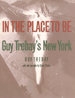

All of New York is Guy Trebay's New York: the streets, the alleys, the chic shops, the zoo; the rappers, the drag queens, the kids in the public pool, the subway artist
All of New York is Guy Trebay's New York: the streets, the alleys, the chic shops, the zoo; the rappers, the drag queens, the kids in the public pool, the subway artist


 All of New York is Guy Trebay's New York: the streets, the alleys, the chic shops, the zoo; the rappers, the drag queens, the kids in the public pool, the subway artist
All of New York is Guy Trebay's New York: the streets, the alleys, the chic shops, the zoo; the rappers, the drag queens, the kids in the public pool, the subway artist

|  |
In The Place To BeGuy Trebay's New YorkGuy Trebay, photographs by Sylvia Plachypaper EAN: 978-1-56639-208-2 (ISBN: 1-56639-208-X) |
"This is a frank and engaging look at a city that teaches its inhabitants not to make eye contact."
—The New York Times
In this collection of spirited essays, Trebay reports on the dramatic and subtle changes in his city during the 1980s and 1990s. Tuned in to the stray comment and the characteristic gesture, he charts the city's history eye-to-eye with the people who made it. "When I was a kid in New York, the subways were a place for perfect comportment: riders took their seats, made a vertical fold in the Times, crossed ankles (women), adjusted hats, smoothed the skirts of their Peck & Peck suits, and shut up....I couldn't tell you the moment when the subway became a nonstop subterranean exercise in group therapy with the spirit of Sylvia Frumkin calling the shots. But I'd guess it was in the 1970s. So much weirdness started then...."
Driven by curiosity into obscure corners and marginal neighborhood of the city, a Trebay essay captures fragile moments in the life of a place or an individual. Accompanied perfectly by Sylvia Plachy's often mystical, odd-angled photographs, the essays create a kaleidoscope of people, places, and conversations in the city that is constantly reinventing itself. Trebay freeze-frames it all, even the seemingly permanent "air of self-importance, a conviction that when you're here, you're in the place to be."
"New York has been in a journalistic crisis for years, with almost everyone unsure of how to cover the new city that is emerging—a city of immigrants and poor people, great pains and hard pleasures, needles and trash and rhythms and spices and smells. Guy Trebay is a magnificent exception to this dreary rule: as E.B. White did in his day, Trebay comprehends both the particulars of this new New York and the mood they add up to. He is an absolutely necessary reporter, and also a pleasure to read."
—Bill McKibben, author of The End of Nature
"Trebay, a columnist and editor at the Village Voice, is a good writer, a gutsy man and a mensch.... Since 1981, Trebay has watched and listened to New Yorkers, opening up parts of the city generally beyond his readers' purview....these human-interest stories are worth dipping into."
—Publishers Weekly
Introduction
Parts of Speech
1. Talk That Talk
Some Originals
2. Worlds in a Small Room
3. Down There on a Visit
4. The End of the World in Wax
5. 'Mach Schnell,' Shortcakes!
6. The Job Well Done
7. Baucis and Philemon in the Bronx
8. Candy Says
9. Hoofing It
10. My Grandson the Shaman
The Sweet Sell
11. Junk 'n' Stuff
12. Deaf Jam
13. Broadway Hustle
14. Insane!!!
15. I'm Dreaming of a White Column
16. Going Off
17. In the Salsa Zone
Kinship18. Kanesha and Aunt Te
19. The World as We Knew It
20. Thomas Wilson's Unfinished Business
21. Turn On, Turn In
22. Bronx Cheer
23. The Mourning News
Rituals
24. The Horse Knows the Way
25. Have a Fresh Day
26. Under One Tent
27. Le Look
28. Net Gain, Net Loss
29. Reasons to be Cheerful
30. The Countdown
31. Eyes on the Prize
32. What Is Love?
The Faith
33. Let Every Heart Prepare Him Room
34. He Want You But He Do Not Need You
35. God's Acre
36. Bless the Beasts
37. Articles of Faith
Pangloss City
38. The Strange Garden of David Hammons
39. The Rose and the Thorn
40. Machine Dreams
41. Purple Reign
42. Mixed Greens
Dreams Deferred
43. A Pompeian Flower in New York
44. Too Many Tellings
45. Tunnel Vision
46. One More Sot
47. Hanging in the Flow
48. Dog Day Afternoon
49. Drug Rules
50. The War at Home
51. Rules of the Game
52. Urban Underdevelopment
High Times
53. Swing Time
54. Land of a Thousand Dances
55. Circus Nerves
56. The Spirit Is Willing
57. Guerillas Night Out
58. Come as Your Are
59. Come Here Often?
Under One Sky
60. Auk Auk Auk
61. WET
62. Wild Style
63. Heap of Trouble
64. Rites of Spring
65. The Hole Story
66. Closed for the Season
67. "_ _ _ _ _"
68. The Three Bears
69. A Very Young Elephant
70. Life at C
Everything Must Go
71. Everything Must Go
Guy Trebay, a columnist and senior editor at The Village Voice, writes frequently for The New Yorker, Vibe, Conde Nast Traveler, Grand Street, and many other national publications.
General Interest
Art and Photography
© 2015 Temple University. All Rights Reserved. This page: http://www.temple.edu/tempress/titles/1114_reg.html.